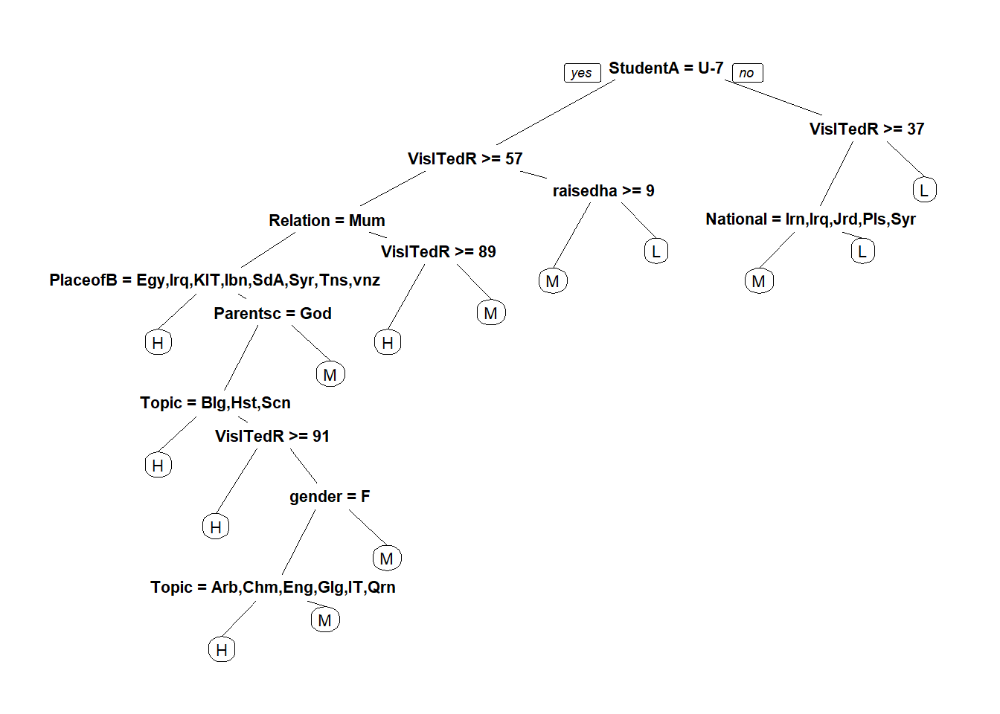

set.seed(1234)# 按照数据目标8:2进行分层抽样，返回矩阵形式的抽样索引index <-createDataPartition(edudata$Class, p =0.8, list = F)train <- edudata[index, ]test <- edudata[-index, ]# 建立回归树模型rpart_model <-rpart(Class ~., data = train)# type = "class"指定预测结果是具体的某个类别pred_rp <-predict(rpart_model, test[-17], type ="class")confusionMatrix(pred_rp, test$Class)
Confusion Matrix and Statistics
Reference
Prediction H M L
H 18 3 0
M 9 29 3
L 1 10 22
Overall Statistics
Accuracy : 0.7263
95% CI : (0.6252, 0.8128)
No Information Rate : 0.4421
P-Value [Acc > NIR] : 1.882e-08
Kappa : 0.5806
Mcnemar's Test P-Value : 0.05103
Statistics by Class:
Class: H Class: M Class: L
Sensitivity 0.6429 0.6905 0.8800
Specificity 0.9552 0.7736 0.8429
Pos Pred Value 0.8571 0.7073 0.6667
Neg Pred Value 0.8649 0.7593 0.9516
Prevalence 0.2947 0.4421 0.2632
Detection Rate 0.1895 0.3053 0.2316
Detection Prevalence 0.2211 0.4316 0.3474
Balanced Accuracy 0.7990 0.7320 0.8614
prp(rpart_model)

5.3.2 随机数模型
set.seed(1234)# importance = T:稍后对变量进行重要性的可视化rf_model <-randomForest(Class~., data = train, importance = T)pred_rf <-predict(rf_model, test[-17], type ="class")confusionMatrix(pred_rf, test$Class) # 混淆矩阵判断模型准确率
Confusion Matrix and Statistics
Reference
Prediction H M L
H 20 4 0
M 8 36 4
L 0 2 21
Overall Statistics
Accuracy : 0.8105
95% CI : (0.7172, 0.8837)
No Information Rate : 0.4421
P-Value [Acc > NIR] : 1.886e-13
Kappa : 0.7032
Mcnemar's Test P-Value : NA
Statistics by Class:
Class: H Class: M Class: L
Sensitivity 0.7143 0.8571 0.8400
Specificity 0.9403 0.7736 0.9714
Pos Pred Value 0.8333 0.7500 0.9130
Neg Pred Value 0.8873 0.8723 0.9444
Prevalence 0.2947 0.4421 0.2632
Detection Rate 0.2105 0.3789 0.2211
Detection Prevalence 0.2526 0.5053 0.2421
Balanced Accuracy 0.8273 0.8154 0.9057
set.seed(1234)library(kernlab) # Kernel-Based Machine Learning Labsvm_model <-ksvm(Class~., data = test, kernel ="rbfdot")# type = "response":指定预测结果是具体的某个列别pred_svm <-predict(svm_model, test[-17], type ="response")confusionMatrix(pred_svm, test$Class)
Confusion Matrix and Statistics
Reference
Prediction H M L
H 23 4 0
M 5 36 1
L 0 2 24
Overall Statistics
Accuracy : 0.8737
95% CI : (0.7897, 0.933)
No Information Rate : 0.4421
P-Value [Acc > NIR] : < 2.2e-16
Kappa : 0.8053
Mcnemar's Test P-Value : NA
Statistics by Class:
Class: H Class: M Class: L
Sensitivity 0.8214 0.8571 0.9600
Specificity 0.9403 0.8868 0.9714
Pos Pred Value 0.8519 0.8571 0.9231
Neg Pred Value 0.9265 0.8868 0.9855
Prevalence 0.2947 0.4421 0.2632
Detection Rate 0.2421 0.3789 0.2526
Detection Prevalence 0.2842 0.4421 0.2737
Balanced Accuracy 0.8809 0.8720 0.9657